Discrete mathematics
트리의 정의
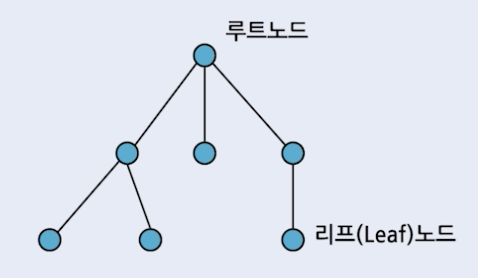
루트 노드를 가지고 있고, 모든 노드들 사이에 단순 경로가 존재하는 비순환 연결 그래프
- 루트 노드 : 나무의 뿌리에 해당하는, 트리에 가장 높은 곳에 위치하는 노드
- 경로 : 노드에서 노드로 가는, 중복되지 않은 연결선들의 나열
- 단순 경로 : 시작과 끝노드가 중복되는것을 제외하고 노드가 중복되지 않는 경로
- 사이클 : 시작 노드와 끝 노드가 같은 경로
- 비순환 그래프 : 사이클이 존재하지 않는 그래프 -> 트리에는 루프가 없음
- 연결 그래프 : 서로 다른 모든 노드들 사이에 항상 경로가 있는 그래프
부모노드
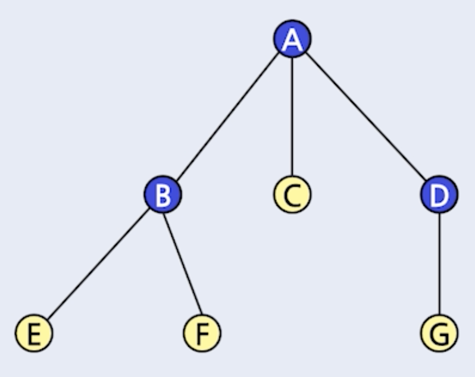
부모 노드
- 한단계 상위 노드
- 노드 A는 노드 B, C, D의 부모 노드
- 노드 B는 노드 E, F의 부모 노드
- 노드 D는 노드 G의 부모 노드
자식 노드
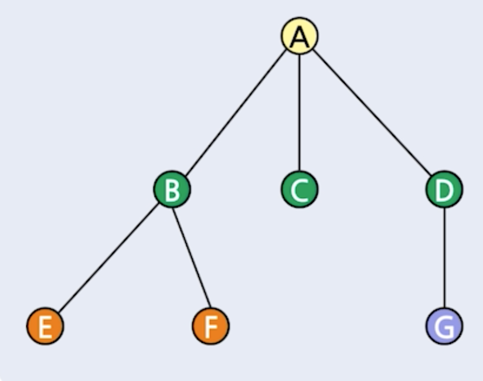
- 한단계 하위 노드
- 노드 B, C, D는 노드 A의 자식 노드
- 노드 E, F는 노드 B의 자식 노드
- 노드 G는 노드 D의 자식 노드
형제 노드
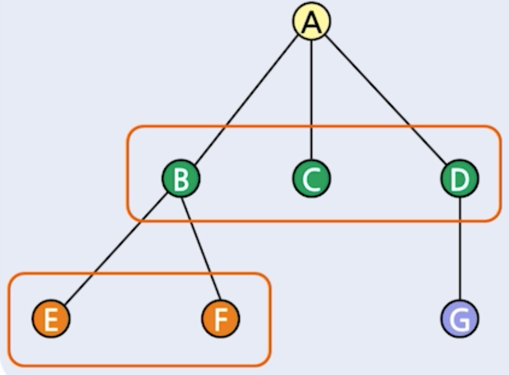
- 부모가 같은 노드
- 노드 B, C, D는 서로 형제 노드
- 노드 E, F는 서로 형제 노드
리프 노드
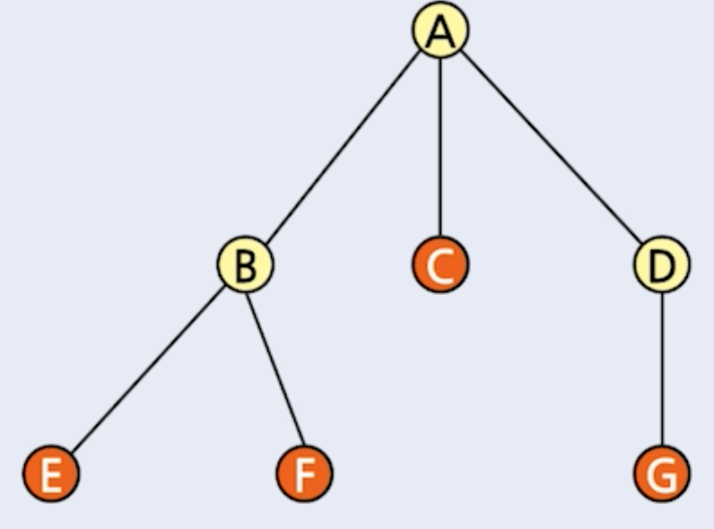
- 자식 노드가 없는 노드
- 노드 C, E, F, G는 리프 노드
중간 노드
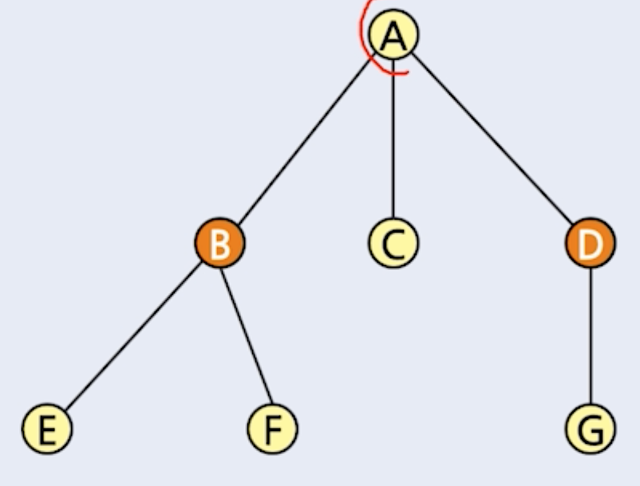
- 루프 노드나 리프 노드가 아닌 노드
- 노드 B와 D는 중간 노드
노드의 차수
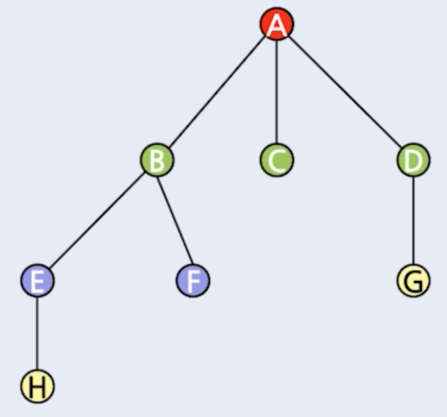
- 노드의 차수 = 자식 노드의 개수
- A 노드 차수 = 3
- B 노드 차수 = 2
- C 노드 차수 = 0
- 트리에서의 노드의 차수 != 그래프에서의 노드의 차수
트리의 차수
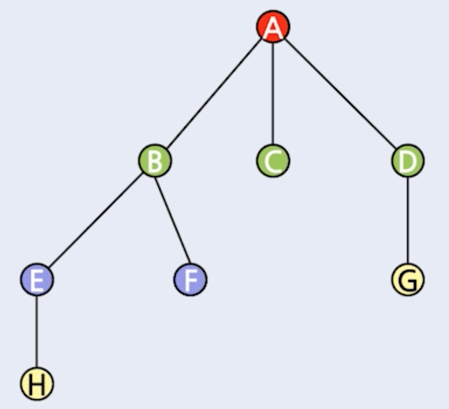
- 각 노드의 차수의 최대값
- A 노드의 차수 = 3
- B 노드의 차수 = 2
- C 노드의 차수
=> 트리의 차수 = 3
- 트리의 차수 != 그래프의 차수
레벨
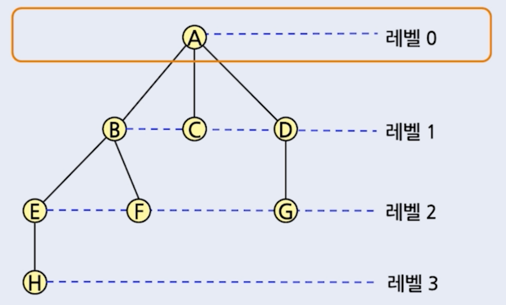
- 루트 노드는 레벨 0
- 자식 노드로 가면서 레벨이 한 단계 씩 증가
트리의 높이(또는 깊이)
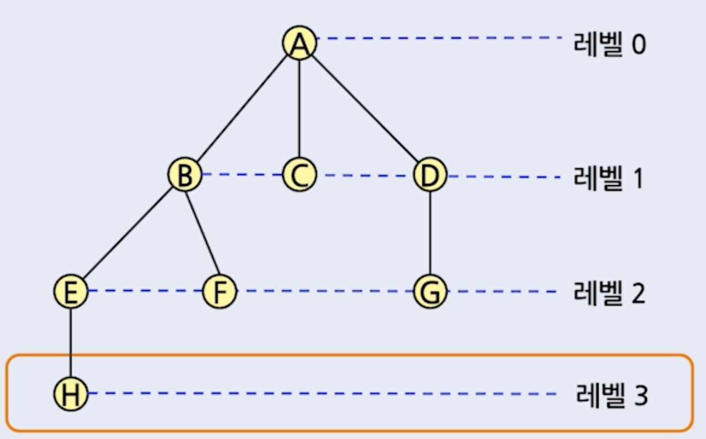
트리의 최대 레벨
트리의 순회
전위순회 : 루트 - 왼쪽 - 오른쪽 노드 순으로 방문
중위순회 : 왼쪽 - 루트 - 오른쪽 노드 순으로 방문
후위순회 : 왼쪽 - 오른쪽 - 루트 순으로 방문
트리의 차수
- 각 노드의 차수의 최대값
- A 노드의 차수 = 3
- B 노드의 차수 = 2
- C 노드의 차수
=> 트리의 차수 = 3
- 트리의 차수 != 그래프의 차수
레벨
- 루트 노드는 레벨 0
- 자식 노드로 가면서 레벨이 한 단계 씩 증가
트리의 높이(또는 깊이)
트리의 최대 레벨
트리의 순회
전위순회 : 루트 - 왼쪽 - 오른쪽 노드 순으로 방문
중위순회 : 왼쪽 - 루트 - 오른쪽 노드 순으로 방문
후위순회 : 왼쪽 - 오른쪽 - 루트 순으로 방문
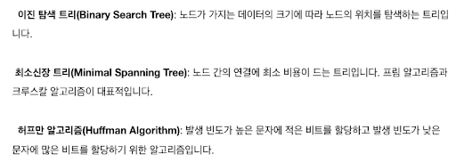